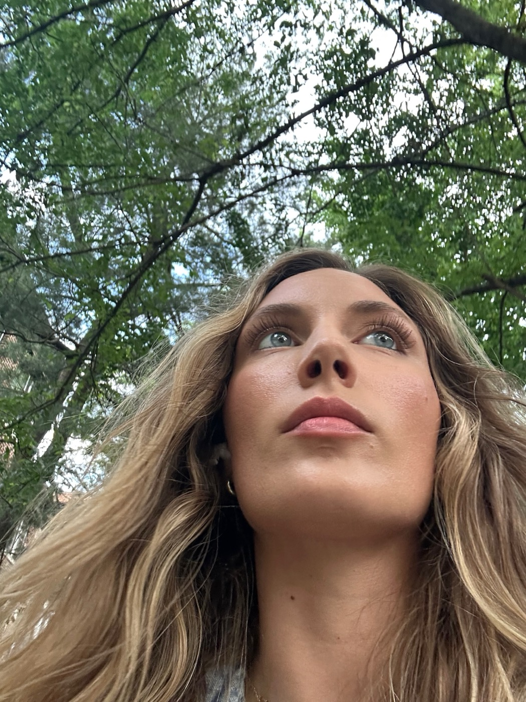

i.
Your career
You're good at your job. You're just not sure it's yours anymore.
- "I worked so hard to get here. Why don't I want it?"
- "I'm burnt out, but I'm scared to walk away."
- "I know I'm meant for more. I just don't know what."
For women who are ready to come back to themselves
Maybe it's a career that no longer fits, a pattern you keep repeating with people you love, or the quiet question of what comes next. Wherever it shows up, we'll get curious about what's keeping you there, and find the strength you already have to move.

"You already carry more of the answer than you think."
You might be here because
Most women who find me are capable, high-achieving, and quietly exhausted from carrying something they can't quite name. Maybe one of these sounds familiar.
i.
You're good at your job. You're just not sure it's yours anymore.
ii.
With a partner, your family, your friends, or yourself.
iii.
The bigger, quieter question of who you're becoming.
A different way to see it
Stuck isn't a character flaw. It's a signal that something in you is ready to grow.
You don't need another productivity system, another five-year plan, or another person telling you what you should do. You've had plenty of that.
What most of us need is room to slow down, tell the truth, and get genuinely curious about our own lives. Why this pattern? Why now? What do you actually want, underneath what you think you're supposed to want?
When you can answer those honestly, the next step usually gets a lot clearer. And it's yours.

Meet your guide
I spent years building a career that looked right on paper and never quite felt like mine. I was good at it, and best at the part that was never the main job: the people. I was also quietly asking myself whether I'd taken the wrong road.
When I finally let myself get curious about that question, the next step got clearer. Now I help women do the same: slow down, listen to what's true, and take the next honest step.
How we work together
Whether we meet once or for a full season, the work follows the same simple path.
We look honestly at where you are: the patterns in your work, relationships, energy, and rest, and what's really keeping you in place.
We get clear on what you want, underneath what you think you should want, and shape a path that fits your real life.
You take the next step with someone in your corner. We adjust as life responds, so the change lasts.
We look at your patterns with interest, not shame.
I ask better questions. You reach your own conclusions.
We build on what has carried you before.
I'll be kind, and I'll be straight with you.
Ways to work together
Every option is one-on-one and fully online. Pick the one that fits what's on your mind right now.
Single sessions · as needed
One thing on your mind that you want to talk through. Book a single session whenever you need one, and leave knowing your next step.
One month · weekly
Four weekly sessions focused on one area of your life, so you get honest about what's in the way and start moving while someone's in your corner. Email check-ins between sessions included.
12 weeks · weekly
The deeper work. Twelve weeks across work, relationships, energy, and rest to find a direction that's yours and the self-trust to follow it. Email check-ins between sessions included.
Not sure which fits? That's what the free call is for. Find the season that fits you
"My time mentoring with Jordan was very insightful. It was wonderful to experience how easily she connects with people. She is truly one of a kind and brought out attributes in myself I didn't know I possessed."
"Jordan went above and beyond my expectations. I immediately felt like I had known her forever. She is truly gifted at encouraging you to be the best version of yourself you can be!"
Ready when you are
When you're ready, book a free 20-minute call. No pressure and no pitch, just a real conversation about where you are and whether working together feels right.